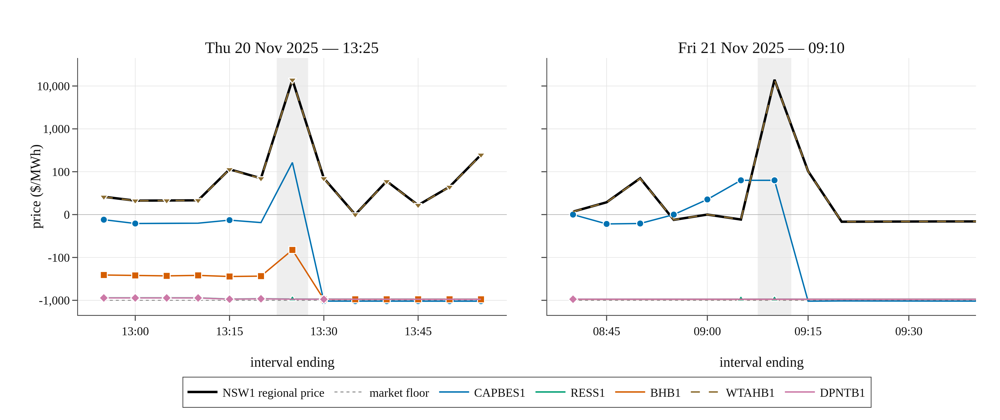

BESS investigation study
A worked end-to-end investigation: five batteries in New South Wales were dispatched to CHARGE while the regional price was near the market cap, on 20 and 21 November 2025. This page runs the whole thing — the question, the gates, the evidence, the diagnosis, and what it means.
It is also the reference example for how a dispatch outcome is investigated with this package, because the method generalises: reproduce, gate, identify, decompose, and only then explain.
The question
On each of two consecutive days the New South Wales spot price reached about $14,000/MWh for a single five-minute interval. During those intervals several batteries were dispatched to consume, buying energy at close to the cap.
Read as a bidding failure, that is inexplicable: no operator sets out to buy at $14,000/MWh. Read as a market outcome, it needs an explanation that survives contact with the data.
The mechanism, stated before the data
A participant is settled at its region's reference price. It is dispatched against a different number.
Write the dispatch LP with regional balance carrying dual $\lambda_r$, and generic security constraints carrying duals $\mu_c$, where unit $u$ enters constraint $c$ with factor $f_{uc}$. Stationarity of an interior offer band gives that band's price as
\[\pi_u \;=\; \lambda_{r(u)} \;+\; \sum_c f_{uc}\,\mu_c\]
the unit's local price. Two consequences follow, and between them they are the whole event.
Nothing bounds the gap. A constraint that binds hard drives $|\mu_c|$ to whatever it takes to clear, and the identity then places $\pi_u$ arbitrarily far below $\lambda_r$. Settlement follows $\lambda_r$ regardless.
For a load, the dispatch test inverts. A load band states a willingness to pay, so bands fill from the highest price down and a band is taken while $p^{\text{band}} > \pi_u$. A band priced at $0/MWh — the most conservative offer a generator can make short of the floor — is, for a load facing a local price of $-\$40$/MWh, an instruction to consume.
See Prices and duals for the derivation.
Running it
# 1. Solve both trading days and write the evidence (576 intervals)
julia --project=. scripts/zbenchmark/run_bess_event_nov2025_2day.jl --download
# 2. Work through the diagnosis; emit the tables
julia --project=. scripts/zbenchmark/analyse_bess_event_study.jl
# 3. Draw the figure
julia --project=. scripts/zbenchmark/plot_bess_event_study.jlStep 1 produces seven CSVs. Every number on this page comes from them.
| File | Contents |
|---|---|
bess_event_prices.csv | regional prices against AEMO's published ROP, all 11 services |
bess_event_regional.csv | demand and price, by region and interval |
bess_event_storage.csv | per-unit dispatch, cost, and local price with its decomposition |
bess_event_local_terms.csv | per-(unit, constraint) shadow-price contributions |
bess_event_constraints.csv | binding constraints, our duals against AEMO's |
bess_event_bids.csv | ten-band offer stacks for the storage units |
bess_event_price_check.csv | the marginal-band diagnostic |
Step 0 — the gates
Nothing downstream means anything unless the reconstruction reproduces the event. The analysis therefore stops rather than reporting a plausible answer built on a failed premise.
Gate 1: regional prices
Over 2,880 regional energy prices across the two days:
| Statistic | Value |
|---|---|
| Mean absolute error against published ROP | $0.0350/MWh |
| Median error | 0.0000 |
| Maximum absolute error | $13.81/MWh |
And at the two intervals that matter, exactly:
| Interval | Modelled | AEMO ROP | Error |
|---|---|---|---|
| 2025-11-20 13:25 | 14,000.68 | 14,000.68 | +0.0000 |
| 2025-11-21 09:10 | 14,000.68 | 14,000.68 | +0.0000 |
Gate 2: the duals
This is the gate that matters, because the multipliers compared here are exactly the $\mu_c$ that enter the decomposition, and AEMO publishes its own value for each one in DISPATCHCONSTRAINT.MARGINALVALUE.
| Statistic | Value |
|---|---|
| Binding constraint outcomes compared | 20,970 |
| Agreeing within $0.01 | 92.56% |
| Median absolute difference | 0.000000 |
For the constraint that turns out to dominate, agreement is to five decimal places at both spikes (see the conditions table below).
A diagnostic that is NOT a gate
The analysis also reports a marginal-band residual test — find units dispatched strictly inside an offer band, and check that the band's price equals the local price. Over these two days it passes on 8.4% of unit-intervals, with a median residual of $104/MWh.
That is expected, and the test is not used as a gate, because as stated it is invalid. Band interiority is necessary for strict marginality and nowhere near sufficient: a unit inside a band may still be pinned by a ramp-rate limit, a bid capacity or UIGF cap, an FCAS joint-capacity constraint, or a tie-break equality, each contributing a dual the identity does not carry. The residual measures the omitted duals, and its dominant mode sits at the offer floor — the fingerprint of a ramp-limited unit dispatched partway into a floor-priced band.
It is reported because a reader would otherwise wonder whether it had been checked. It is not gated on because it would fail for the wrong reason.
Step 1 — which units, and what it cost
Chosen from the data, not from a list: every bidirectional unit with a negative net target in an interval whose regional price exceeded $300/MWh.
Five distinct units, seven unit-intervals, $189,061 total. Every one of the seven reproduces AEMO's published TOTALCLEARED exactly — so this is the market's behaviour, not the reconstruction's.
| Unit | Cost ($) | Offered MW | $ per offered MW |
|---|---|---|---|
CAPBES1 | 81,336 | 96 | 813 |
RESS1 | 71,170 | 60 | 1,186 |
BHB1 | 29,168 | 45 | 648 |
WTAHB1 | 7,000 | (see below) | — |
DPNTB1 | 387 | 25 | 15 |
The three material cases cost $648–$1,186 per MW offered.
Step 3 — the decomposition
Here is the whole event in one table. $\lambda_r$ is what the unit is settled at; $\pi_u$ is what it was dispatched against; headroom is the distance from $\pi_u$ to the market floor referred to that unit's connection point — the room a bidder had to price its way out.
| Interval | Unit | MW | $\lambda_r$ | $\sum f\mu$ | $\pi_u$ | Headroom | Top load band | Cost ($k) | Diagnosis |
|---|---|---|---|---|---|---|---|---|---|
| 20 Nov 13:25 | BHB1 | −25.0 | 14,000.68 | −14,087.58 | −82.42 | 866.0 | 54.38 | 29.2 | constrained on |
| 20 Nov 13:25 | RESS1 | −1.0 | 14,000.68 | −14,996.13 | −935.33 | 4.3 | 0.06 | 1.2 | constrained on |
| 20 Nov 13:25 | WTAHB1 | −6.0 | 14,000.68 | 0.00 | 13,892.87 | 14,885.2 | 20,143.69 | 7.0 | own offer |
| 21 Nov 08:35 | CAPBES1 | −30.0 | 1,160.39 | −1,171.78 | −11.83 | 1,027.1 | 0.00 | 2.9 | constrained on |
| 21 Nov 08:35 | DPNTB1 | −4.0 | 1,160.39 | −2,156.92 | −942.02 | 3.3 | 284.43 | 0.4 | constrained on |
| 21 Nov 09:10 | CAPBES1 | −67.2 | 14,000.68 | −13,923.68 | 80.00 | 1,118.9 | 80.00 | 78.4 | marginal |
| 21 Nov 09:10 | RESS1 | −60.0 | 14,000.68 | −15,002.25 | −941.07 | −1.5 | −939.60 | 70.0 | constrained on |
All prices $/MWh at the connection point, load side. N::N_CNLT_2 carries the largest $|f\mu|$ in six of the seven rows.
Three mechanisms, not one
The decomposition separates cases that a dispatch outturn alone would conflate.
Constrained on — five of seven. A binding constraint drives the local price below the unit's load bands, which are unchanged and were harmless in the interval before. BHB1 is the clearest: its two load bands are bit-identical across the seven intervals 13:05–13:35 — 25 MW at $54.38 and 25 MW at $34.34 — and that single unchanged stack costs it between $0 and $237 in six of those intervals and $29,168 in the seventh. Nothing about the offer changed; only the regional price did.
Marginal — one, and the most instructive. CAPBES1 offered 96 MW of load at $79.9953/MWh, and the LP set its local price at exactly that figure: it was the marginal load, pricing itself. Its local price was $79.9953/MWh at 09:05 and $79.9953/MWh at 09:10 — identical to six decimal places — while the price it settles at moved from −$11.50 to $14,000.68, a swing of $14,012.18/MWh. Its target barely moved either (67.2 MW against 69.4 MW). From inside the unit's own dispatch signal, nothing whatsoever happened. The interval cost $78,435.
Its own offer — one. WTAHB1 had no binding constraint at all: its local price equals the regional price to the cent, and its adjustment is exactly zero. It charged 6 MW because it had offered that 6 MW at $20,143.69/MWh at its connection point — the market price cap. A load band at the cap is an instruction to charge at any price, which is presumably its purpose for a small station load. At about $8 per MW of the unit's capacity this is not a comparable event to the others; it is included because a diagnosis that could not tell it apart from the other six would be worthless.
Step 2 — what produced the spikes
Same dominant constraint, different trigger.
| Interval | $\lambda_{\mathrm{NSW}}$ | Demand (MW) | $\Delta$demand (MW) | N::N_CNLT_2 RHS (MW) | N::N_CNLT_2 $\mu$ | AEMO MARGINALVALUE |
|---|---|---|---|---|---|---|
| 20 Nov 13:25 | 14,000.68 | 6,489 | +114 | 1,003.25 | −13,987.053190 | −13,987.05319 |
| 21 Nov 09:10 | 14,000.68 | 7,781 | +436 | 1,217.11 | −15,130.804922 | −15,130.80812 |
N::N_CNLT_2 is a Snowy-area transient-stability equation. Its shadow price sits near −$1,000/MWh in normal operation. Since the regional price is $14,000.68/MWh in both intervals, the price is almost entirely congestion rent on one outage-driven constraint, not energy scarcity: subtract the constraint contribution and a unit with unit factor is left with a local price of order $10/MWh.
The triggers differ. On the 20th the constraint's right-hand side collapsed — a feedback constraint re-baselining on measured line flows — against a moderate demand rise. On the 21st the right-hand side relaxed and demand supplied the shock instead: +436 MW between consecutive intervals, the largest of the 575 transitions in the two days.
A diagnosis that searched only for newly binding constraints would have missed the 20th entirely, because a feedback constraint tightens by moving its right-hand side while remaining nominally the same constraint. The analysis therefore reports right-hand-side movement on already-binding constraints as well.
The figure

Black is the NSW1 regional reference price, at which every unit is settled. The coloured traces are the units' local prices, at which they are dispatched, quoted at each unit's connection point. Filled markers mark the intervals in which a unit was dispatched to charge; the shaded band is the interval of interest.
The gap between black and colour is the exposure. Two features carry the argument:
- On the right panel,
CAPBES1(blue) is flat across the spike. Its local price does not move while the black line goes to the cap and back. WTAHB1is drawn dashed because no constraint binds on it, so its local price equals the regional price and its trace lies exactly beneath the black line. That coincidence is the visual signature of the one unit here caught by its own offer rather than by the network.
The price axis is symmetric-log: linear within $100/MWh of zero, logarithmic outside it. Within a single panel the prices span the market floor to the market cap; a linear axis compresses every local price onto zero, and a logarithmic one cannot show the floor at all. The transform is applied to the data and the ticks set explicitly, because Plotly has no symlog axis type — see symlog_transform in the plotting script.
Steps 4 and 5 — offers, and the counterfactual
The headroom column decides whether a price-based defence existed, and it splits the cases in a way the outturn does not.
Where the defence existed, and was wide. CAPBES1 had $1,119/MWh of headroom and BHB1 $866/MWh. CAPBES1 needed only to price its 96 MW load band below its own local price of $79.9953 to avoid $78,435 of cost — and did exactly that one interval later, rebidding the same 96 MW from $79.9953 to $0.00/MWh. The information needed to make that decision beforehand was its own local price, which had been at or above $34/MWh for the two preceding intervals.
Where it did not exist. RESS1 at 09:10 had a single load band priced at −$939.60/MWh — exactly the market floor of −$1,000/MWh referred to its connection point by its 0.9396 loss factor — against a local price of −$941.07/MWh. Headroom of −$1.47/MWh: it was already bidding at the lowest price the rules admit, and was dispatched anyway, for $70,003. DPNTB1 sat in the same regime with $3.28/MWh.
In that regime the only remaining instrument is withdrawing load availability, which must be decided and submitted inside the five-minute cycle and which forfeits the upside of the very volatility that created the risk. RESS1 took it at 09:15, its availability dropping from 47 MW to zero.
What it means
The exposure is structural, not a bidding error. The identity and the load dispatch test are properties of a market that settles regionally and dispatches locationally. A storage unit is uniquely exposed because it is the only participant whose load can be constrained on. BHB1 is the proof: one unchanged offer stack, harmless in six intervals and ruinous in the seventh.
But the defence is case-dependent, and that was not obvious in advance. Two of the three expensive cases had ample headroom; the third had none. Both regimes occurred within thirty-five minutes of each other and are indistinguishable from the outturn alone — only the decomposition tells them apart. A blanket claim that constrained charging is unavoidable is as wrong as the blanket claim that it reflects poor bidding.
Price-based defence has a hard limit. Offers are bounded below by the market floor, so a participant retains a price defence only while $\pi_u$ exceeds that floor referred to its connection point. RESS1 shows the limit exactly.
The exposure is measurable in advance. The identity needs only the constraint equations, the unit's factors in them, and the duals — all reconstructible, as the agreement with MARGINALVALUE in Step 0 demonstrates. A participant who computes $\pi_u$ alongside $\lambda_r$ sees the exposure as a level rather than discovering it as a settlement outcome. On these two days, a rule that withdrew load availability as $\pi_u$ approached the floor and repriced load bands below $\pi_u$ where headroom existed would have prevented six of the seven cases. The exception is WTAHB1, whose band at the cap is a deliberate must-charge instruction that no monitoring rule should override.
Adapting the study
Nothing in the scripts is specific to these two days.
# A different event, a different region
julia --project=. scripts/zbenchmark/run_bess_event_study.jl 2025-11-25T00:05 288 \
--region=NSW1 --data-dir=data/nempy_2025_11 --download
julia --project=. scripts/zbenchmark/analyse_bess_event_study.jl \
--intervals=2025-11-25T12:15 --region=NSW1
julia --project=. scripts/zbenchmark/plot_bess_event_study.jl \
--intervals=2025-11-25T12:15 --window=9The units to investigate are chosen from the data by the elevated-price threshold, so a different event finds its own set.
Caveats
These are model results, validated against published prices. The reconstruction reproduces AEMO's ROP to $0.035/MWh mean absolute error and its duals to within a cent in 92.6% of cases, and every dispatch quoted here matches TOTALCLEARED exactly. That is strong, and it is not the same as being AEMO's own dispatch.
The remaining 7.4% of duals. Most of the disagreement is on degenerate constraint groups where the split between duals is not identifiable — see the Queensland lower 6 s / 60 s discussion in Prices and duals. It is worth checking, for any constraint you rely on, that it is not one of them.
Costs are settlement-price arithmetic, MW × price × 5/60, on the energy side only. They exclude FCAS revenue, which for a battery is substantial, and they are not a profit-and-loss statement.
$ per MW uses offered availability, which is what the published data gives. Figures quoted elsewhere for this event are usually per MW of registered capacity; the two coincide only where a unit offered its full nameplate.